This section of the manual walks you through every element of the NetLogo interface in order and explains its function (with the exception of the Info Tab).
In NetLogo, you have the choice of viewing models found in the Models Library, adding to existing models, or creating your own models. The NetLogo interface was designed to meet all these needs.
The interface can be divided into two main parts: NetLogo menus, and the main NetLogo window. The main window is divided into tabs.
On Macs, if you are running the NetLogo application, the menubar is located at the top of the screen. On other platforms, the menubar is found at the top of the NetLogo window.
The functions available from the menus in the menubar are listed in the following chart.
|
File | ||
|
|
New |
Starts a new model. |
|
|
Open |
Opens any NetLogo model on your computer. |
|
|
Models Library |
A collection of demonstration models. |
|
|
Save |
Save the current model. |
|
|
Save As |
Save the current model using a different name. |
|
|
Save As Applet |
Saves a web page, in HTML format, that has your model embedded in it as a Java "applet". |
|
|
|
Sends the contents of the currently showing tab to your printer. |
|
|
Export World |
Saves all variables, the current state of all turtles and patches, the drawing , the plots, the output area and the random state information to a file. |
|
|
Export Plot |
Saves the data in a plot to a file. |
|
|
Export All Plots |
Saves the data in all the plots to a file. |
|
|
Export View |
Save a picture of the current view (2D or 3D) to a file (in PNG format). |
|
|
Export Interface |
Save a picture of the current Interface tab. ( in PNG format ) |
|
|
Export Output |
Save the contents of the output area or the output section of the command center to a file. |
|
|
Import World |
Load a file that was saved by Export World. |
|
|
Import Patch Colors |
Load an image into the patches; see the import-pcolors command. |
|
Import Patch Colors RGB |
Load an image into the patches using RGB colors; see the import-pcolors-rgb command. | |
|
|
Import Drawing |
Load an image into the drawing, see the import-drawing command. |
|
|
Import HubNet Client Interface |
Load the interface from another model into the HubNet Client Editor. |
|
|
Quit |
Exits NetLogo. (On Macs, this item is on the NetLogo menu instead.) |
|
Edit | ||
|
|
Cut |
Cuts out or removes the selected text and temporarily saves it to the clipboard. |
|
|
Copy |
Copies the selected text. |
|
|
Paste |
Places the clipboard text where cursor is currently located. |
|
|
Delete |
Deletes selected text. |
|
|
Undo |
Undo last text editing action you performed. |
|
|
Redo |
Redo last undo action you performed. |
|
|
Select All |
Select all the text in the active window. |
|
|
Find |
Finds a word or sequence of characters within the Info or Code tabs. |
|
|
Find Next |
Find the next occurrence of the word or sequence you last used Find with. |
|
|
Shift Left /
|
Used in the Code tab to change the indentation level of code. |
|
|
Comment /
|
Used in the Code tab to add or remove semicolons from code (semicolons are used in NetLogo code to indicate comments). |
|
Snap To Grid |
When enabled new widgets stay on a 5 pixel grid so it is easier to line them up. (Note: this feature is disabled when zoomed in or out.) | |
|
Tools | ||
|
|
Halt |
Stops all running code, including buttons and the command center. (Warning: since the code is interrupted in the middle of whatever it was doing, you may get unexpected results if you try to continue running the model without first pressing "setup" to start the model run over.) |
|
|
Globals Monitor |
Displays the values of all global variables. |
|
|
Turtle Monitor |
Displays the values of all of the variables in a particular turtle. You can can also edit the values of the turtle's variables and issue commands to the turtle. (You can also open a turtle monitor via the View; see the View section below.) |
|
|
Patch Monitor |
Displays the values of all of the variables in a particular patch. You can can also edit the values of the patch's variables and issue commands to the patch. (You can also open a patch monitor via the View; see the View section below.) |
|
|
Link Monitor |
Displays the values of all of the variables in a particular link. You can can also edit the values of the link's variables and issue commands to the link. (You can also open a link monitor via the View; see the View section below.) |
|
|
Close All Agent Monitors |
Closes all open agent monitor windows. |
|
|
Hide/Show Command Center |
Makes the command center visible or invisible. (Note that the command center can also be shown or hidden, or resized, with the mouse.) |
|
|
3D View |
Opens the 3D view. See the Views section for more information. |
|
|
Color Swatches |
Opens the Color Swatches. See the Color Section of the Programming Guide for details. |
|
|
Turtle Shapes Editor |
Draw turtle shapes. See the Shapes Editor Guide for more information. |
|
Link Shapes Editor |
Draw link shapes. See the Shapes Editor Guide for more information. | |
|
|
BehaviorSpace |
Runs the model over and over with different settings. See the BehaviorSpace Guide for more information. |
|
|
System Dynamics Modeler |
Opens the System Dynamics Modeler. See the System Dynamics Modeler Guide for more details. |
|
|
HubNet Client Editor |
Opens the HubNet Client Editor. See the HubNet Authoring Guide for more details. |
|
|
HubNet Control Center |
Disabled if no HubNet activity is open. See the HubNet Guide for more information. |
|
Zoom | ||
|
|
Larger |
Increase the overall screen size of the model. Useful on large monitors or when using a projector in front of a group. |
|
|
Normal Size |
Reset the screen size of the model to the normal size. |
|
|
Smaller |
Decrease the overall screen size of the model. |
|
Tabs |
This menu offers keyboard shortcuts for each of the tabs. (On Macs, it's Command 1 through Command 3. On Windows, it's Control 1 through Control 3.) | |
|
Help | ||
|
|
About NetLogo |
Information on the current NetLogo version the user is running. (On Macs, this menu item is on the NetLogo menu instead.) |
|
|
Look Up In Dictionary |
Opens a browser with the dictionary entry for the selected command or reporter. |
|
|
NetLogo User Manual |
Opens this manual in a web browser. |
|
|
NetLogo Dictionary |
Opens the NetLogo Dictionary in a web browser. |
At the top of NetLogo's main window are three tabs labeled "Interface", "Info" and "Procedures" . Only one tab at a time can be visible, but you can switch between them by clicking on the tabs at the top of the window.
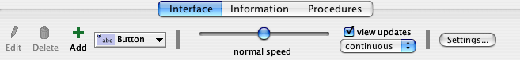
Right below the row of tabs is a toolbar containing a row of controls. The controls available vary from tab to tab.
The Interface tab is where you watch your model run. It also has tools you can use to inspect and alter what's going on inside the model.
When you first open NetLogo, the Interface tab is empty except for the View, where the turtles and patches appear, and the Command Center, which allows you to issue NetLogo commands.
The toolbar on the Interface tab contains buttons that let you edit, delete, and create items in the Interface tab and a menu that lets you select different interface items (such as buttons and sliders).
The buttons in the toolbar are described below.
Adding: To add an interface element, select the element from the the drop down menu. Note that the Add button becomes pressed. Then click on the white area below the toolbar. (If the menu is already showing the right type, you can just press the Add button instead of using the menu again.)
Selecting: To select an interface element, drag a rectangle around it with your mouse. A gray border will appear around the element to indicate that it is selected.
Selecting multiple items: You can select multiple interface elements at the same time by including them in the rectangle you drag. If multiple elements are selected, one of them is the "key" item, which means that if you use the "Edit" or "Delete" buttons on the Interface Toolbar, only the key item is affected. The key item is indicated by a darker gray border than the other items.
Unselecting: To unselect all interface elements, click the mouse on the white background of the Interface tab. To unselect an individual element, control-click (Macintosh) or right-click (other systems) the element and choose "Unselect" from the popup menu.
Editing: To change the characteristics of an interface element, select the element, then press the "Edit" button on the Interface Toolbar. You may also double click the element once it is selected. A third way to edit an element is to control-click (Macintosh) or right-click (other systems) it and choose "Edit" from the popup menu. If you use this last method, it is not necessary to select the element first.
Moving: Select the interface element, then drag it with your mouse to its new location. If you hold down the shift key while dragging, the element will move only straight up and down or straight left and right.
Resizing: Select the interface element, then drag the black "handles" in the selection border.
Deleting: Select the element or elements you want to delete, then press the "Delete" button on the Interface Toolbar. You may also delete an element by control-clicking (Macintosh) or right-clicking (other systems) it and choosing "Delete" from the popup menu. If you use this latter method, it is not necessary to select the element first.
To learn more about the different kinds of interface elements, refer to the chart below.
| Icon & Name | Description |
|---|---|
| Buttons can be either once-only buttons or forever buttons. When you click on a once button, it executes its instructions once. The forever button executes the instructions over and over, until you click on the button again to stop the action. If you have assigned an action key to the button, pressing the corresponding keyboard key will act just like a button press when the button is in focus. Buttons with action keys have a letter in the upper right corner of the button to show what the action key is. If the input cursor is in another interface element such as the Command Center, pressing the action key won't trigger the button. The letter in the upper right hand corner of the button will be dimmed in this situation. To enable action keys, click in the white background of the Interface tab. | |

| Sliders are global variables, which are accessible by all agents. They are used in models as a quick way to change a variable without having to recode the procedure every time. Instead, the user moves the slider to a value and observes what happens in the model. |

| Switches are a visual representation for a true/false variable. The user is asked to set the variable to either on (true) or off (false) by flipping the switch. |

| Choosers let the user choose a value for a global variable from a list of choices, presented in a drop down menu. |

| Input Boxes are global variables that contain strings or numbers. The model author chooses what types of values the user can enter. Input boxes can be set to check the syntax of a string for commands or reporters. Number input boxes read any type of constant number expression which allows a more open way to express numbers than a slider. Color input boxes offer a NetLogo color chooser to the user. |
| Monitors display the value of any expression. The expression could be a variable, a complex expression, or a call to a reporter. Monitors automatically update several times per second. | |
| Plots are real-time graphs of data the model is generating. | |

| The output area is a scrolling area of text which can be used to create a log of activity in the model. A model may only have one output area. |
| Notes lets you add informative text labels to the Interface tab. The contents of notes do not change as the model runs. |
The other controls in the Interface Toolbar allow you to control the view updates and various other model properties.

"Continuous" updates means that NetLogo updates (that is, redraws) the view many times a second, regardless of what is going on in the model. "Tick-based" updates means that the view only updates when the tick counter advances. (For a fuller discussion of view updates, see the Programming Guide.)
The large black square in the Interface tab is the 2D view. It's a visual representation of the NetLogo world of turtles and patches. Initially it's all black because the patches are black and there are no turtles yet. You can open the 3D View, another visual representation of the world, by clicking on the "3D" button in the View Control Strip.

The three sets of black arrows in the upper left let you change the size of the world. When the origin is centered the world will grow in increments of two, adding one to the maximum and subtracting one from the minimum. If one of the edges is set to 0 the world will grow by one in the other direction to keep the origin along the edge. If the origin is at a custom location the black arrows will be disabled.
There are a number of settings associated with the Views. There are a few ways of changing the settings: by using the control strip along the top edge of the View, or by editing the 2D View, as described in the "Working With Interface Elements" section above, or pressing the "Settings..." button in the toolbar.
Notice that the control strip in the 3D View combines the ticks counter from the 2D view control strip and the controls from the right portion of the interface toolbar.

Here are the settings for the View (accessible by editing the View, or by pressing the "Settings..." button in the Interface Toolbar):
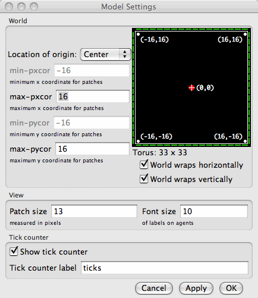
Notice that the settings are broken up into three groups. There are world, view, and ticks counter settings. World settings affect the properties of the world that the turtles live in (changing them may require resetting the world). View and tick counter settings only affect the appearance, changing them will not affect the outcome of the model.
The world settings allow you to define the boundaries and topology of the world. At the top of the left side of the world panel you can choose a location for the origin of the world either "Center", "Corner", "Edge", or "Custom". By default the world has a center configuration where (0,0) is at the center of the world and the user defines the number of patches from the center to the right and left boundaries and the number of patches from the center to the top and bottom boundaries. For Example: If you set Max-Pxcor = 10 Min-Pxcor will automatically be set to -10 thus there are 10 patches to the left of the origin and 10 patches to the right of patch 0 0.
A Corner configuration allows the user to define the location of the origin as one of the corners of the world, upper left, upper right, lower left, or lower right. Then you define the far boundary in the x and y directions. For example if you choose to put the origin in the lower left corner of the world you define the right and top (positive) boundaries.
Edge mode allows you to place the origin along one of the edges (x or y) then define the far boundary in that direction and both boundaries in the other. For example if you select edge mode along the bottom of the world, you must also define the top boundary, as well as the left and the right.
Finally, Custom mode allows the user to place the origin at any location in the world, though patch 0 0 must still exist in the world.
As you change the settings you will notice that the changes you make are reflected in the preview on the right side of the panel which shows the origin and the boundaries. The width and height of the world are displayed below the preview.
Also below the preview there are two checkboxes, the world wrap settings. These allow you to control the topology of the world. Notice when you click the check boxes the preview indicates which directions allow wrapping, and the name of the topology is displayed next to the world dimensions. See the Topology Section of the Programming Guide for more information.
The view settings allow you to customize the look of the view without changing the world. Changing view settings will never force a world reset. To change the size of the 2D View adjust the "Patch Size" setting, measured in pixels. This does not change the number of patches, only how large the patches appear in the 2D View. (Note that the patch size does not affect the 3D View, as you can simply make the 3D View larger by making the window larger.)
The "Smooth edges" checkbox controls the use of anti-aliasing in the 3D view only and only appears when editing from the 3D view. It will make the lines appear less jagged but it will slow down the model.
Tick counter settings control the appearance of the tick counter which is visible (or not) in the view control strip.
Turtle, patch and link monitors are easily available through the View, just control-click (Macintosh) or right-click (other systems) on the turtle or patch you want to inspect, and choose "inspect turtle ..." or "inspect patch ..." from the popup menu. You can also watch, follow or ride a turtle by selecting the appropriate item in the turtle sub-menu. (Turtle, patch and link monitors can also be opened from the Tools menu or by using the inspect command.)
Some NetLogo models let you interact with the turtles and patches with your mouse by clicking and dragging in the View.
At the bottom of the window there are buttons to move the observer, or change the perspective from which you are looking at the world.

A blue cross appears at the current focus point as you are adjusting these settings. The little blue triangle will always point up the positive y-axis, so you can orient yourself in case you get lost. It's easy to do!

To look at the world from a different angle, press the "rotate" button click and drag the mouse up, down, left, or right. The observer will continue to face the same point as before ( where the blue cross is ) but its position in the relation to the xy-plane will change.
To move closer or farther away from the world or the agent you are watching, following or riding, press the "zoom" button and drag up and down along the 3D View. (Note when you are in follow or ride mode zooming will switch you between ride and follow, since ride is just a special case of follow where the distance at which you are following is 0.)
To change the position of the observer without changing the direction it is facing select the "move" button and drag the mouse up, down, left, and right inside the 3D View while holding down the mouse button.
To allow the mouse position and state to be passed to the model select the "interact" button and it will function just as the mouse does in the 2D view.
To return the observer and focus point to their default positions press the "Reset Perspective" button (or use the reset-perspective command).
Fullscreen Mode
To enter fullscreen mode, press the "Full Screen" button, to exit fullscreen mode, press the Esc key.
Note: Fullscreen mode doesn't work on some computers. It depends on what kind of graphics card you have. See the System Requirements for details.
3D Shapes
Some shapes have true 3D counterparts ( a 3D circle is actually a sphere ) in the 3D view so they are automatically mapped to that shape.
| Shape name | 3D shape |
| default | 3D turtle shape |
| circle | sphere |
| dot | small sphere |
| square | cube |
| triangle | cone |
| line | 3D line |
| cylinder | 3D cylinder |
| line-half | 3D line-half |
| car | 3D car |
All other shapes are interpreted from their 2D shapes. If a shape is a rotatable shape it is assumed to be a top view and it is extruded as if through a cookie cutter and oriented parallel to the xy-plane, as in Ants.
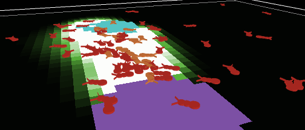
If a shape is non-rotatable it is assumed to be a side view so it is drawn always facing the observer (and with no thickness), as in Wolf Sheep Predation.

The Command Center allows you to issue commands directly, without adding them to the model's procedures. (Commands are instructions you give to the agents in your model.) This is useful for inspecting and manipulating agents on the fly.
(Tutorial #2: Commands is an introduction to using commands in the Command Center.)
Let's take a look at the design of the Command Center.

The smaller box, below the large box, is where you type a command. After typing it press the Return or Enter key to run it.
To the left of where you type is a popup menu that initially says "observer>". You can choose either observer, turtles, or patches, to specify which agents run the command you type.
Tip: a quicker way to change between observer, turtles, and patches is to use the tab key on your keyboard.
Accessing previous commands
After you type a command, it appears in the large scrolling box above the command line. You can use Copy on the Edit menu in this area to copy commands and then paste them elsewhere, such as the Procedures tab.
You can also access previous commands using the history popup menu, which is the small downward pointing triangle to the right of where you type commands. Click on the triangle and a menu of previously typed commands appears, so you can pick one to use again.
Tip: a quicker way to access previous commands is with the up and down arrow keys on your keyboard.
Clearing
To clear the large scrolling area containing previous commands and output, click "clear" in the top right corner.
To clear the history popup menu, choose "Clear History" on that menu.
Arranging
You can hide and show the command center using the Hide Command Center and Show Command Center items on the Tools menu.
To resize the command center, drag the bar that separates it from the model interface. Or, click one of the little arrows on the right end of the bar to make the command center either very big or hidden altogether.
To switch between a vertical command center and a horizontal one, click the button with the double-headed arrow, just to the left of "Clear".
If you move the mouse over the white area of a plot, the x and y coordinates of the mouse location will appear. (Note that the mouse location might not correspond exactly to any actual data points in the plot. If you need to know the exact coordinates of plotted points, use the Export Plot menu item and inspect the resulting file in another program.)
When you create a plot, as with all widgets, the edit dialog automatically appears.
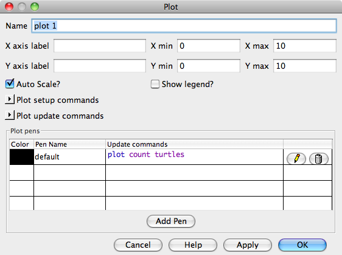
Many of the fields are fairly self explanatory, the name of the plot, labels for the x and y axes, ranges for the axes, and the Show Legend? checkbox.
If Auto Scale? is checked the x and y changes will automatically readjust as points are added to the plot if they are outside the current range.
In the Plot setup commands field you can enter commands that will be
run when the reset-ticks or setup-plots
commands are run. Click the little triangle to open up the a text box
the enter the commands. Plot update commands are explained in more
detail in the Plotting Section of the Programming Guide.
In the Plot update commands field you can enter commands that will be
run when the tick or update-plots commands
are run. Click the little triangle to open up the a text box the
enter the commands. Plot setup commands are explained in more detail
in the Plotting Section of the Programming Guide.
In the plot pens section of the dialog you can create and customize different pens in this plot. Each row in the plot pens table represents a pen in this plot. You start out with one pen named "default" which you probably want to rename it something that is meaningful in the model.
All the items in the box below the pen name are settings relevant to that particular pen.
tick or update-plots
commands are run. This is explained in more detail in the Plotting
Section of the Programming Guide.
Clicking the pencil button for a particular pen will bring up this dialog:
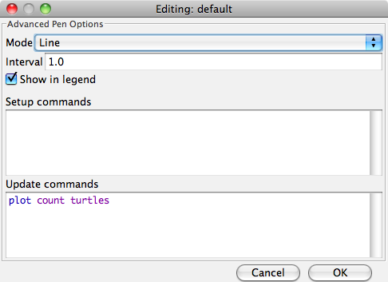
reset-ticks or setup-plots
commands are run. This is explained in more detail in the Plotting
Section of the Programming Guide.
tick or update-plots commands
are run. This field appears in the advanced dialog to give more space
for more complicated code. This is explained in more detail in the
Plotting Section of the Programming Guide.
For more detailed information on how each of these features works you can see the Plotting Section of the Programming Guide.
Sliders define global variables, they are provided as an easy way to change the value of these global variables without changing the underlying code. When you place a slider in the Interface tab the edit dialog automatically opens, as with all widgets. Most of the fields will be familiar. However, it is important to notice the the minimum, maximum and increment fields will take any reporter expression, not just constants. So, for example, you could make the minimum min-pxcor and the maximum max-pxcor and the slider bounds will automatically adjust when you change the size of the world.

You can open agent monitors though the Tools Menu or by using the inspect command. Agent monitors display both the values of all the variables for a particular agent and a mini-view that displays the agent a small radius around it.
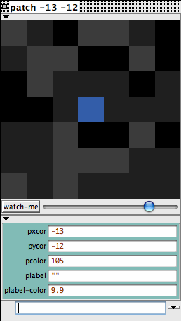
You can zoom in or out using the slider beneath the view and you can watch the agent using the watch-me button.
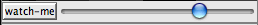
Below the slider the current values of the each agent variable is displayed. You can enter new values directly into the fields on the right. It will be as if, for example, the code set pcolor ... had been executed.
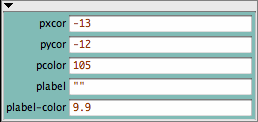
Below agent variable area there is a mini-command center. Rather that executing code as the observer, or talking to all of the turtles, patches, or links the code entered in this command center is executed by only by this agent.
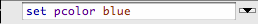
You can close the agent monitors by clicking the box in the upper left corner or by press escape. If you hold down shift while you click the box all open agent monitors will close or you can close all the agent monitors using the "Close All Monitors" option in the Tools Menu.
This tab is the workspace where the code for the model is stored. Commands you only want to use immediately go in the Command Center; commands you want to save and use later, over and over again, are found in the Code tab.
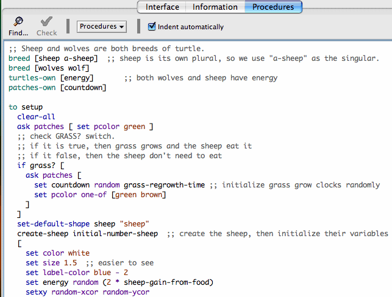
To determine if the code has any errors, you may press the "Check" button. If there are any syntax errors, the Code tab will turn red and the code that contains the error will be highlighted and a comment will appear in the top box. Switching tabs also causes the code to be checked and any errors will be shown, so if you switch tabs, pressing the Check button first isn't necessary.
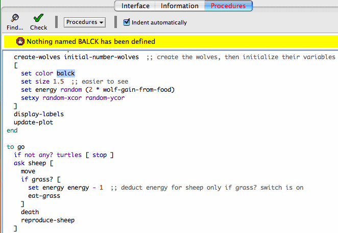
To find a fragment of code in the procedures, click on the "Find" button in the Procedures Toolbar and the Find dialog will appear.

You may enter either a word or phrase to find or a word or phrase to find and one to replace it with. The "Ignore case" checkbox controls whether the capitalization must be the same to indicate a match. If the "Wrap around" checkbox is checked the entire Code tab will be checked for the phrase, starting at the cursor position, when it reaches the end it will return to the top, otherwise only the area from the cursor position to the end of the Code tab will be searched. The "Next" and "Previous" buttons will move down and up to find another occurrence of the search phrase. "Replace" changes the currently selected phrase with the replace phrase and "Replace & Find" changes the selected phrase and moves to the next occurrence. "Replace all" will change all instances of the the find phrase in the search area with the replace phrase.
To find a particular procedure definition in your code, use the "Procedures" popup menu in the Procedures Toolbar. The menu lists all procedures in alphabetical order.
The "Shift Left", "Shift Right", "Comment", and "Uncomment" items on the Edit menu are used in the Code tab to change the indentation level of your code or add and remove semicolons, which mark comments, from sections of code.
For more information about writing procedures, read Tutorial #3: Procedures and the Programming Guide.
When you add the __includes keyword to a model a menu to the right of the procedures menu appears. This is the includes menu which lists all the NetLogo source files (.nls) included in this file (either .nlogo or .nls).
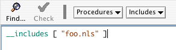
You can click on the file names in the menu to open a new tab containing that file, or you can open new files, or files in the file system using the other New Source File and Open Source File respectively.
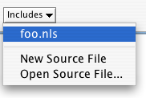
Once you've opened new tabs you can navigate them similarly to the other tabs. They are accessible from the Tabs menu and you can use the keyboard to move from tab to tab (Command + number on Mac, Control + number on other operating systems).
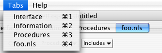
The includes facility is new and experimental. Nonetheless, we think some users will find it useful.
When the Indent Automatically checkbox is selected NetLogo will automatically attempt to align your code in an easy to read format. For example, when you open a set of square brackets "[" (perhaps after an if statement), NetLogo will automatically add spaces so that the following lines of code are two space further indented than the bracket. When you close the square brackets the closing bracket will be lined up with the matching open bracket.
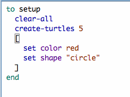
NetLogo will try to indent the code as you type but you can also press the tab key anywhere on any line to manually ask NetLogo to indent the line properly, or you can highlight entire regions of code and press the tab key to re-indent.
NetLogo 5.0 includes improved support for languages and locales besides U.S. English.
Prior to NetLogo 5.0, NetLogo files were saved and loaded using the default character encoding of your operating system. This meant that they weren't entirely portable. It was possible to save a model and send it to someone else with a different character encoding on their operating system and things would come out garbled when they opened the file in NetLogo.
In NetLogo 5.0, all .nlogo files are saved and loaded in the UTF-8 character encoding. This means that any machine that you're working on should be able to load your model and have it look exactly the same.
We are hoping those of you in locales other than U.S. English will try using NetLogo in your locale with your local character set and report to us about successes or problems that you find.
The Transition Guide has advice on converting models containing international characters from earlier NetLogo versions.
Most of NetLogo's GUI, and some of its error messages, are now "internationalized". This means that it is now possible to display NetLogo in different languages. We say "possible" here because the current release of NetLogo only supports English and Spanish. The Spanish translation is preliminary and incomplete. Text in the interface that hasn't been internationalized yet will still be displayed in English.
The work on internationalization is not complete and may not be fully complete even in the final 5.0 release. We are asking for help from the user community in helping us localize items such as the menus and error messages.
By default, NetLogo uses the language of your operating system, if that language is supported by NetLogo. As we said, NetLogo currently only supports English and Spanish. If the your default system language is Spanish, NetLogo should open up in Spanish. This will be true for other languages as well once we have translations for those languages. If your language is not currently supported, then NetLogo will fall back to English.
Some English users may want to experiment with Spanish (and other languages once they are supported). To do this, use the __change-language primitive (simply typing it into the Command Center will do). This will open a dialog that allows you to choose from the supported languages. Once a new language is chosen you will have to restart NetLogo. When NetLogo restarts, it will display in the new language. This new language selection is saved so that each time NetLogo starts up, it will use this selection. To change back to English, simply use the __change-language primitive again.
We would love to have NetLogo running in many different languages. If you would like to translate NetLogo to your language, we hope you will contact us at feedback@ccl.northwestern.edu. We can send you the files to translate and provide instructions on how to include the translations when starting NetLogo. We plan to make this process easier in the near future, but for now we are just getting started.